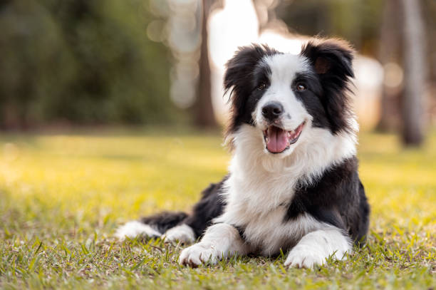
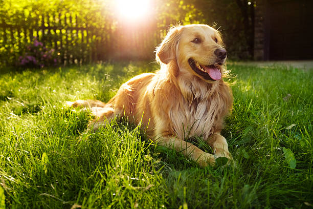
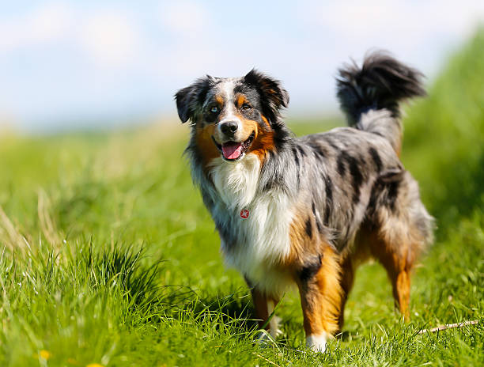

Best Overall Dog Breeds
Border Collie
Origin
Scotland
Price
$500 - $2,000
Lifespan
12-15 years
Full Description
Border Collies are highly intelligent, energetic, and active dogs, often regarded as one of the smartest dog breeds. They excel in various dog sports, including agility, herding, and obedience trials. Known for their incredible speed and stamina, Border Collies are often used in competitions and are a favorite for dog sport enthusiasts. Their agility makes them well-suited for high-energy environments, and their strong work ethic is a key trait that is highly appreciated in competitive dog sports, such as agility events seen in the Olympics.
For more information...Border Collie in Action
This video demonstrates the agility skills of a Border Collie, showcasing their incredible ability to perform at Olympic-level standards in dog sports.
Golden Retriever
Origin
Scotland
Price
$500 - $3,000
Lifespan
10-12 years
Full Description
Golden Retrievers are one of the most beloved dog breeds in the world. Known for their friendly, intelligent, and devoted nature, they are often chosen as family pets. They are also widely used as service dogs, including guide dogs for the visually impaired and therapy dogs. Golden Retrievers excel in obedience and agility competitions and are recognized for their playful and loving temperament. Their versatility and trainability make them ideal companions in both family environments and various dog sports, including events in the Olympics.
For more information...Golden Retriever in Action
This video highlights a Golden Retriever participating in an agility competition, demonstrating their skill in Olympic-level dog sports.
Australian Shepherd
Origin
United States
Price
$600 - $1,800
Lifespan
12-15 years
Full Description
Australian Shepherds are known for their intelligence, energy, and herding abilities. They excel in agility and obedience competitions, making them a popular choice for dog sport enthusiasts. Although they are not from Australia, their name is derived from the breed’s association with the working sheepdogs in the region. These dogs are incredibly agile and energetic, making them perfect for high-energy sports such as agility, obedience, and herding trials.
For more information...Australian Shepherd in Action
Watch an Australian Shepherd showing off their agility skills in an Olympic-level dog sport event.
Australian Shepherd Video
Why These Dogs Are the Best Overall Breeds
When choosing the best overall dog breeds, it's important to consider a combination of qualities that make them not only exceptional companions but also versatile in different environments. The breeds selected—Golden Retrievers, Australian Shepherds, and Collies—are known for their intelligence, loyalty, and ability to adapt to a variety of roles. Here's why these breeds stand out as the best overall dogs:
1. Golden Retriever: The Ideal Family Dog
Golden Retrievers are one of the most beloved dog breeds, and for good reason. Their friendly, loyal, and intelligent nature makes them fantastic companions for families of all shapes and sizes. Whether you're looking for a dog to join you on outdoor adventures or cuddle up on the couch, Golden Retrievers are always up for both. They are great with children and get along well with other pets, making them ideal for households with multiple members.
Additionally, Golden Retrievers excel in various roles, including being guide dogs for the blind, therapy dogs, and even search-and-rescue dogs. Their versatility, affectionate nature, and ease of training make them a top choice for anyone seeking a well-rounded, loving dog.
2. Australian Shepherd: The Active and Agile Worker
The Australian Shepherd is known for its exceptional intelligence and work ethic. Originally bred for herding livestock, this breed is highly energetic and thrives in active environments. Australian Shepherds require a lot of exercise and mental stimulation, making them perfect for active families, sports enthusiasts, and individuals who enjoy outdoor activities.
Their herding instincts, combined with their agility, make them ideal for dog sports, such as agility courses and obedience competitions. Beyond their athleticism, Australian Shepherds are also incredibly loyal and protective, making them excellent companions for both individuals and families who need a devoted and intelligent dog.
3. Collie: Worker With a Heart of Gold
Collies are famous for their gentle and affectionate nature. Known for their remarkable intelligence and strong bond with their families, Collies are patient, calm, and great with children. Originally bred for herding, Collies have a natural protective instinct and are incredibly devoted to their families.
Their intelligence allows them to excel in obedience training, and they are known to perform exceptionally well in therapy and service dog roles. Collies are also highly adaptable, making them a wonderful choice for families in need of a loyal and loving companion. Their stunning coat and graceful appearance are just a bonus to their already remarkable personality.
Why They Stand Out
All of these breeds share qualities that make them ideal pets for different types of households. Whether you're seeking a loving family dog, an active companion for outdoor adventures, or a dog with a strong work ethic, Golden Retrievers, Australian Shepherds, and Collies provide the perfect balance of intelligence, loyalty, and adaptability.
Their ability to thrive in various roles, such as therapy dogs, service dogs, and working dogs, speaks to their versatility and makes them a top choice for many dog lovers around the world. These dogs not only bring joy and comfort to their owners but also make a significant impact in many service-oriented fields, further cementing their status as the best overall breeds.
Dog Breed Participation in Competitive Sports and other roles
Below is a table showing their relative participation in popular dog sports and roles.
| Dog Breed | Agility Competitions | Obedience Trials | Search & Rescue Roles | Therapy Dogs |
|---|---|---|---|---|
| Golden Retriever | 120 | 85 | 30 | 150 |
| Australian Shepherd | 200 | 120 | 50 | 75 |
| Collie | 90 | 140 | 20 | 100 |
Note: The numbers in the table are based on participation data from various dog sports organizations like the American Kennel Club (AKC).